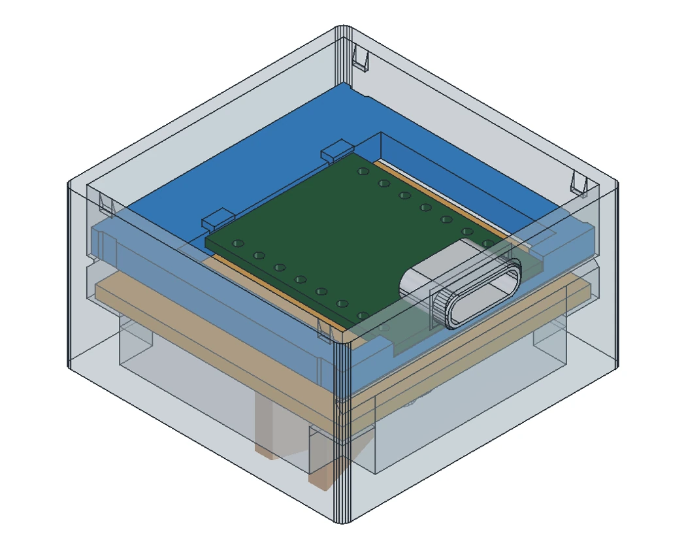
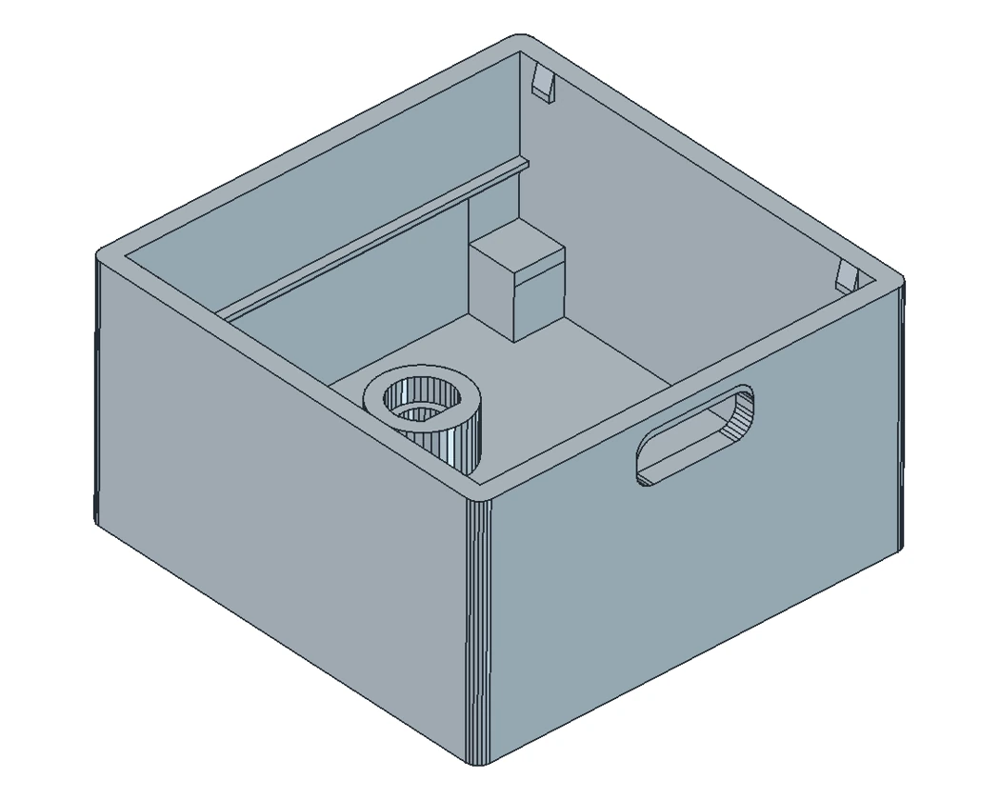
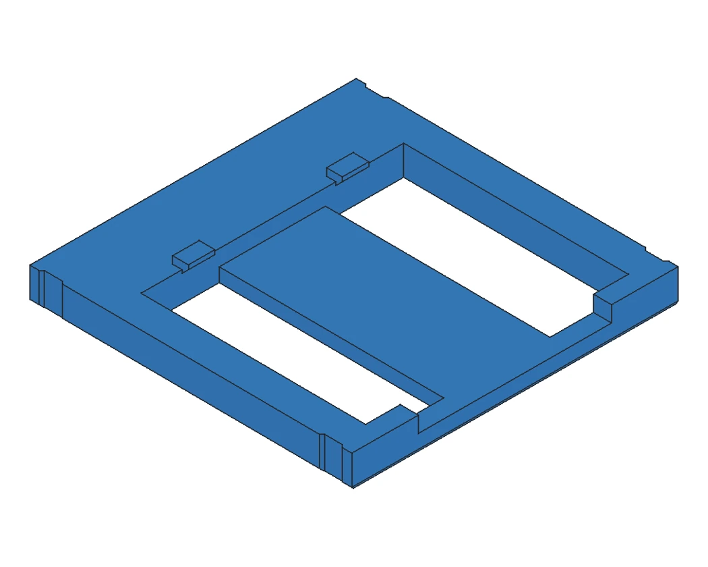
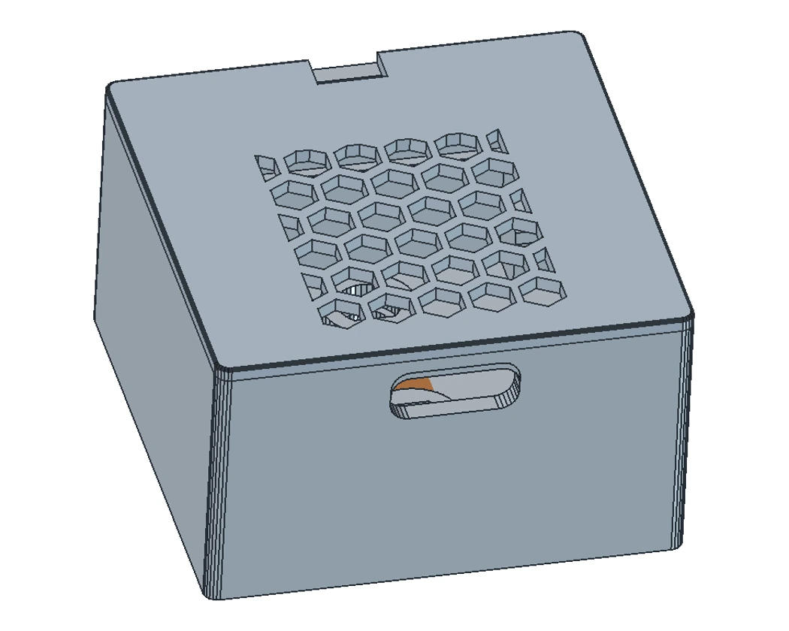
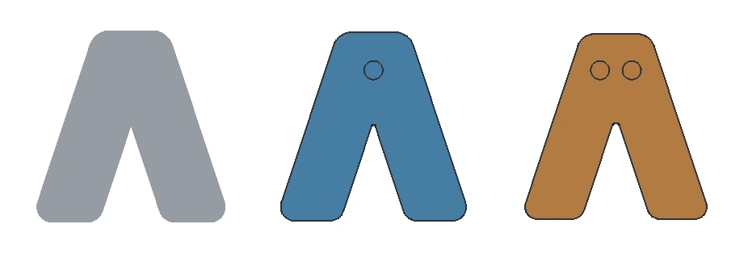
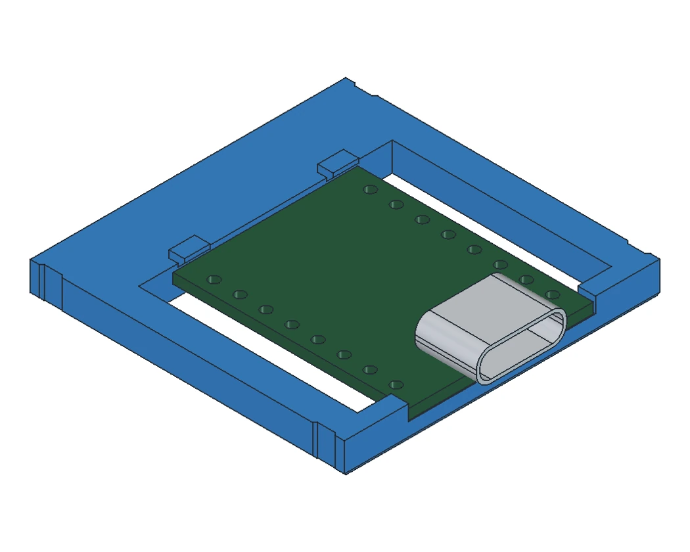

Optolink
ESP v2
Корпус Optolink с кассетой для ESP32-C3, нижней монтажной платой и усиленными опорными полками.

Детали и размеры
Габариты указаны в порядке X × Y × Z, в миллиметрах. STL лежат по отдельности в папке «02_На печать», нижняя точка каждой модели приведена к Z=0.
| Деталь | Габарит, мм | Описание | Файл |
|---|---|---|---|
| Корпус | 34,15 × 34,25 × 19,00 | Полки кассеты на Z=11,5, нижние опоры платы на Z=7. | 01 · STL |
| Крышка | 34,15 × 34,25 × 5,00 | Защёлки, решётка над ESP и выемка 5 × 2 мм. | 02 · STL |
| H-кассета | 30,65 × 30,75 × 3,70 | Основание 3 мм. Козырьки выступают над ним на 0,7 мм. | 03 · STL |
| V-вставка, исходная | 10,146 × 10,35 × 11,00 | Без точки. Исходный контур, как в основной сборке. | 04 · STL |
| V-вставка, −0,1 мм | 9,945 × 10,15 × 11,00 | Одна точка. Контур уменьшен на 0,1 мм на сторону. | 05 · STL |
| V-вставка, −0,2 мм | 9,745 × 9,95 × 11,00 | Две точки. Контур уменьшен на 0,2 мм на сторону. | 06 · STL |
| Деталь | Габарит, мм | Положение в сборке |
|---|---|---|
| Нижняя монтажная плата | 30,15 × 30,25 × 1,50 | Низ Z=7, верх Z=8,5. |
| Плата ESP32-C3 | 23,00 × 18,00 × 1,00 | Низ Z=13, верх Z=14. Размеры относятся к текстолиту. |
| Разъём USB-C | 6,00 × 8,80 × 3,20 | Ось Z=15,7295. Вылет за наружный торец корпуса 0,15 мм. |



Печать и сборка
Печатный комплект
Для одного корпуса нужны STL 01–03 и одна V-вставка из файлов 04–06. У уменьшенных вставок точки Ø1 мм глубиной 0,5 мм позволяют различать варианты.
Корпус и кассета ориентированы основанием на стол. Крышка экспортирована наружной плоскостью вниз. Скосы 45° на опорных полках и козырьках рассчитаны на послойную печать плашмя. Фактическую печать этих изменений ещё предстоит проверить.

Как завести нижнюю плату
- Наклонить монтажную плату вдоль X примерно на 11°. Опустить один край ниже верхней опорной полки.
- Сдвинуть плату к опущенному краю, завести его под полку и опустить второй край.
- Выровнять и отцентрировать плату, затем посадить её на нижние угловые опоры Z=7.
Этот проход проверен на габаритном макете 30,15 × 30,25 × 1,5 мм. В узком месте расчётный зазор порядка 0,1 мм.
Узел ESP и кассеты
Плата заводится в кассету со стороны USB. Задняя кромка входит под два козырька и доходит до упора. Два окна оставляют доступ к пинам и позволяют провести провода.
История доработок
Размеры Z отсчитываются от наружного дна корпуса. X — сторона, по которой разъём выходит через торец.
-
Корпус укорочен и стал выше
Оба торца сдвинуты внутрь на 4 мм. Наружная длина уменьшилась с 42,15 до 34,15 мм, ширина осталась 34,25 мм, высота выросла с 16 до 19 мм. Внутреннее сечение корпуса на уровне кассеты 31,15 × 31,25 мм. Номинально дно 2 мм, стенки 1,5 мм.
Нижние угловые опоры подняты с Z=6 до Z=7. Центр USB-отверстия поднят с Z=13,2295 до Z=15,7295.
-
Крышка подогнана под новый корпус
Длина уменьшена до 34,15 мм, исходные защёлки сохранены. Круглое отверстие Ø2 мм закрыто. Решётка из 33 отверстий перенесена над ESP примерно на 6,825 мм по X, шаг рядов по Y уменьшен примерно на 10,2%. На торце напротив USB сделана выемка 5 × 2 мм для снятия крышки.
-
От натяга к монтажному зазору
Первая кассета имела габарит 31,21 × 31,31 мм и пересекала стенки на 0,03 мм с каждой стороны. Габарит основания уменьшен до 30,65 × 30,75 мм, что дало по 0,25 мм зазора при центрировании. Добавлены четыре выемки под выступы у входа и уменьшена нижняя фаска у опорных торцов.
-
Усилен контур и оставлены окна
Две боковые полосы шириной 3 мм замкнули наружный контур H-кассеты. Торец напротив USB усилен до 7,4 мм на этом этапе. Внутри сохранились два окна для проводов и доступ к обоим рядам пинов.
-
Карман под реальную толщину ESP
Толщина платы в сборке исправлена с 1,5 на 1 мм. Дно кармана поднято на 0,5 мм и имеет толщину 1,5 мм. Глубина кармана стала 1,5 мм. Верх текстолита остался на Z=14.
Тонкая стенка 0,15 мм со стороны USB снята. Её размер перенесён на задний упор, торец усилен до 7,55 мм. Гнездо сохранило длину 23,1 мм и ширину 18,2 мм, ESP и USB смещены на 0,15 мм к выходу. Итоговые окна для проводов 21,38 × 7,375 мм. Под кассетой над нижней платой 3 мм.
-
Жёсткие козырьки фиксируют задний край платы
Два козырька шириной 2,5 мм заходят над платой на 0,6 мм. Нижняя поверхность каждого выполнена сплошным скосом 45°. У заднего упора зазор по высоте 0,2 мм. Между козырьками оставлена зона 12 мм для напаянного компонента высотой 1 мм. Общая высота кассеты теперь 3,7 мм.
-
Опорные полки увеличены для печати
Выступ каждой полки увеличен с 0,4 до 0,8 мм. Высота у стенки 1,2 мм, на внутренней кромке 0,4 мм. Нижний скос 45°. Опорная плоскость осталась на Z=11,5. Расчётная площадь контакта кассеты с каждой полкой выросла с 3,035 до 15,175 мм². Для нижней платы проверен наклонный проход.
-
Подготовлены три V-вставки для примерки
Сохранена исходная вставка и добавлены два варианта с уменьшением контура на 0,1 и 0,2 мм на сторону. Номинальная высота всех вариантов 11 мм. В сборке исходная вставка выступает на 8 мм ниже дна. Полная высота корпуса с крышкой и установленной вставкой 28 мм.



Проверки комплекта v2
Основная сборка сохранена как отдельный проект FreeCAD. В ней проверены размеры, положение полок, опора кассеты и отсутствие объёмных пересечений с корпусом, крышкой и макетами в конечном положении.
Все шесть STL повторно открыты как замкнутые сетки. Файлы внутри ZIP совпадают с отдельными STL.
Файлы проекта
00_Исходники
Исходный проект Optolink и три исходные STL.
01_Разработка
02_На печать
Шесть отдельных STL из таблицы и единый ZIP. Для одного устройства выбрать один вариант V-вставки.
03_Иллюстрации
Виды корпуса, кассеты, открытой и закрытой сборки, сравнение вариантов V-вставки.